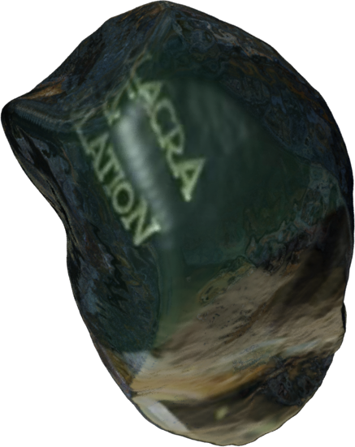
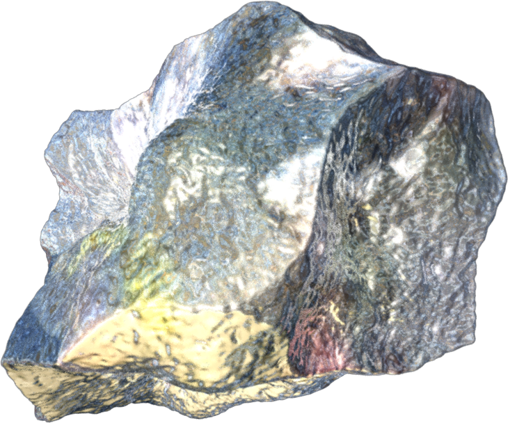

Grafisch Ontwerp als Architectuur
01
Vijgen, R. (2014).
KABK GD Lunch Lecture, Digital Archeology [Keynote]
De plek waar ik me op dit moment bevind. Openbare Bibliotheek Spui plein, Den Haag. De plek die ik opzoek als ik concentratie in mezelf wil afdwingen. De plek met een absurde prijs voor een kopje koffie waarvan iedereen bereid is die te betalen. Het is het enige anti kater medicijn dat verkrijgbaar is, en dan ook door meer dan de helft van studenten hier wordt genuttigd om hun kostbare studie tijd een extra ‘boost’ te geven. Je zult misschien denken dat de stilte, de historische rol van de bibliotheek en het feit dat ik omringd ben door boeken mijn concentratie zou versterken, maar het zijn juist al deze verschillende mensen om me heen die gezamenlijk een sterk gevoel van concentratie en contemplatie uitstralen. Mensen met verschillende achtergronden en motivaties maar momenteel het zelfde doel voor ogen hebben. Af en toe gaat er een telefoon af, met het gevolg dat de eigenaar uit zijn concentratie wordt getrokken en ingaat op het impuls om zijn sociale media uitgebreid te checken, zonde.
Architectuur heeft de rol om locatie specifieke omgevingen te creëren die mensen bij elkaar brengt en aanzet tot specifieken handelingen. Helaas heb ik het gevoel dat grafisch ontwerp — het vak dat ik beoefen — en nieuwe media aan deze kracht zou kunnen bijdragen, maar in hun huidige staat hier juist aan afdoen. Ik wil een kritisch standpunt aannemen naar nieuwe media toe. Voornamelijk de snelheid en verwerpelijkheid waarbinnen het zich nu afspeelt roept zorgen en vragen bij mij op. Wat betekent een locatie specifieke ervaring nog in een wereld die de vorm aanneemt van een constant veranderend netwerk? Hoe kan technologie en media totaalervaringen versterken in plaats van vernauwen? Belangrijk voor mij is hoe dit kan worden bereikt zonder simulatie in de vorm van Virtual reality of het vormgeven van een pretentieuze hyperrealiteit?
In deze scriptie analyseer ik de veranderde definitie van het begrip ruimte, of misschien nog wel beter gezegd het synoniem plek. Het woord heeft namelijk de associatie met een een fysieke plek die ruim (groot) is. Voor veel mensen is dit niet meer per definitie wat het begrip nog betekend. In het zogeheten post-internet tijdperk heeft nieuwe media de kans gekregen een virtuele architectuur te scheppen die versmolten is met onze hedendaagse samenleving. Een ruimte is banaal gezien een op een bepaalde manier aangeduide omgeving met een specifiek doeleinden. Dit kan zowel traditioneel gezien een fysieke en tastbare plek zijn, zoals de bibliotheek met een duidelijke architectuur en locatie in de stad. Een ander voorbeeld is een Reddit subtreath (online forum). Waarvan gezegd kan worden dat dit tevens een nieuw soort ruimte met een duidelijk doeleinden is. Ook kan van deze ruimte gezegd worden dat het een duidelijke lokatie heeft, in de vorm van een uniek webadres. Maar in hoeverre is deze lokatie specifieke ervaring gelijkwaardig aan ervaring binnen de fysieke ruimte? Het dwalen door de straten is ingeruild voor uren intensief surfen binnen de krochten van het internet.
Toen het internet voor persoonlijk gebruik nog in de kinderschoenen stond was de functie ervan voor veel mensen nog moeilijk definieerbaar. Vaak werd er bij de uitleg van mogelijkheden verwezen naar de indelingen van een stad. Een omgeving met verschillende plekken waar je naartoe kan voor verschillende doeleindes. Ondertussen zitten we in een fase waarin stedenbouwers en architecten verwijzen naar het internet, en de structurele indeling daarvan bij het maken en presenteren van een stadsplanning. (01)
02
De Stijl vol. 2, no. 1, Leiden, De Stijl, 1918
In het begin van het modernisme droegen de discours van architectuur als grafisch ontwerp gebundeld een sterk utopisch gedachtegoed. Een wel bekend voorbeeld van Nederlands bodem is De Stijl beweging (1918). Een groep kunstenaars, architecten en grafisch ontwerpers die hun gedachtegoed naar buiten brachten in vorm van De Stijl. Een maandblad voor de moderne beeldende vakken en cultuur dat werd uitgegeven en gepubliceerd door onder anderen Theo van Doesburg. Het tijdschrift had het doeleinden om de theorieën van de groep te verspreiden. In het eerste nummer van de tweede uitgaven staat een duidelijk puntsgewijs manifest gepubliceerd. (02) Dit bijna dogmatische gedachtegoed heeft geleid tot een sterke ontwerp visie, die tot op de dag van vandaag dient als een belangrijke bron voor hedendaagse kunstenaars en ontwerpers.
In de visie van De Stijl is een duidelijke samenhang tussen het vormgeven van onze directe leefomgeving en communicatie in de vorm van het verstrekken en consumeren van informatie (grafisch ontwerp). Zo is bijvoorbeeld de “Berlijnse Stoel” van Gerrit Rietveld ontworpen als zijnde leesstoel. De stoel is zo ontworpen dat een actieve houding van de lezer wordt vereist. Dit met de intentie dat een zekere concentratie bij de lezer wordt afgedwongen. Een ander voorbeeld dat hiermee in samenhang is, is het maandblad De Stijl. Je zou kunnen zeggen dat de staccato schrijf- en ontwerpstijl van het het blad overeen komen met het constructivistische gedachtegoed dat leefde bij Rietveld en de anderen leden binnen de beweging. Het is daarom bijna vanzelfsprekend dat de lezer van het blad plaats neemt in de Berlijnse Stoel.
{ Berlijnse Stoel, Gerrit Rietveld, 1923 }
Alle ontwerpdisciplines zijn natuurlijk tot een bepaalde hoogte veranderd door de modernisering en digitalisering van onze samenleving. Grafisch ontwerp heeft hier helaas meer onder geleden en lijkt minder en minder doordachten manoeuvres te maken binnen het utopische denken. Dit komt natuurlijk omdat grafisch ontwerp het middel is dat vormgeeft aan het verschaffen en consumeren van informatie. Laat staan het middel is van propaganda en het draagvlak is van onze kapitalistische verlangens in de vorm van billboard, catalogi & youtube advertenties. (03) De vele media waardoor we worden geconditioneerd tot een passieve (informatie) consument. Ondertussen lijkt de lokaliteit en materialiteit van grafisch ontwerp helemaal verloren te gaan, want billboards en catalogi zijn passé. We gaan naar een stadium waarin alle verschillende facetten van media in de vorm van informatie en entertainment zich alleen nog maar uiten via het scherm. Een scherm dat we letterlijk steeds dichter op ons netvlies zetten. Een gegeven waar ik later in deze tekst op terugkom.
{ The Perverts Guide to Ideology, Slavoj Žižek / They live, John Carpenter }
Misschien zijn er nog wel net zoveel en waarschijnlijk zelfs meer visie volle (grafisch) ontwerpers op het moment. En wordt er helemaal niet minder interessant en autonoom werk gemaakt. Er is gewoon een hoop informatie bovenop gekomen die zich manifesteert in een vorm van ruis. Deze ruis moet eerst gefilterd worden. Hierdoor blijven de interessante projecten met een doorgronde visie vaak op de achtergrond en zijn hierdoor minder tastbaar voor het grote publiek. Een voorbeeld hiervan zijn de projecten die de verandering van het medium aankaarten en zelf het slachtoffer zijn geworden van het door hun in eerste instantie genoemde probleem. Zo zijn er talloze kritische projecten over het internet, social media & “Post-Internet Politics” die ergens rondzweven op het internet, maar niet los komen van het scherm en zo maar een niche als publiek tot zich nemen.
Gelijktijdig geeft het grootste gedeelte grafisch ontwerp, waar we dagelijks mee te maken krijgen, vorm aan onze hedendaagse communicatie zonder geografische grenzen. Voor het grote publiek is dit de omgeving waarin ze het meest te maken krijgen met grafisch ontwerp. De wereld staat meer en meer in connectie met elkaar door de zogeheten info-sphere. Desondanks deze globale verbintenis lijkt segregatie een steeds groteren rol te spelen in onze samenleving.
04
Analysis of Nazi Propaganda, A Behavioral Study,
Karthik Narayanaswami, Harvard University,
De snelheid waarin informatie wordt verstreken is een van de belangrijkste factoren waarom we er eigenlijk niet wijzer van worden. Zo is bijvoorbeeld de Engelse term “Fake News!" een term die tegenwoordig maar al te graag in de mond wordt genomen om veel van de huidige niet feitelijke media aan te duiden. Nepnieuws is nieuws dat gemaakt wordt met de intentie om de lezer te misleiden. Zeg maar gerust propaganda. Nepnieuws of misinformatie is een bekende vorm van propaganda die inspeelt op de cognitieve bias. Dit zijn situationele voorbeelden van afwijkingen in ons oordeel, meestal als gevolg van een bepaalde stimulatie. Zo werd er bijvoorbeeld in de tijd van Het Derde Rijk onder leiding van Adolf Hitler en Joseph Göbbels bewust ingespeeld op bepaalde subcategorieën binnen deze cognitieve bias van het volk door het verspreiden van misinformatie. (04) Er wordt bij het creëren van nepnieuws dus op een gelijke manier opzettelijk aan de waarheid van het bericht gesleuteld om de hoofden van de lezers een bepaalde kant op te richten. En wanneer de hoofden over het algemeen al letterlijk naar dezelfde richting toe wijzen — wat het geval is met het scherm — maakt het dit alleen maar sneller en makkelijker.
Niks blijft dus onvoorwaardelijk en ook het nieuws blijkt steeds meer afstand te doen van de waarheid. De haastige nieuwe media en technologie helpen daarbij. Omdat we de zekere schermen zo dicht bij ons dragen zijn we ondertussen zeer verslaafd aan de snelheid waarmee het nieuws ons wordt gebracht dat we de legitimiteit ervan niet meer in twijfel treken.
"If you don’t read the newspaper, you’re uninformed. If you do read it, you’re misinformed,"
sprak acteur Denzel Washington kritisch tijdens de première van zijn nieuwe film Fences op 13 december 2016. (05) Een journaliste ondervroeg hem op de rode loper over de onjuiste berichten die over hem de wereld in werden geslingerd. Hierop gaf de acteur het volgende statement waar ik me graag bij aan wil sluiten:
“That’s the great question. What is the long term effect of to much information? One of the effects is the need to be first not even to be true anymore. So, what a responsibility you all have as journalist, to tell the truth. Not just to be first, but to tell the truth. We live in a society now were it’s just first. Wo cares, get it out there. We don’t care who it hurts, we don’t care who we destroy, we don’t care if its true. Just say it, sell it! Anything you practice you get good at. Including bullshit.”
Interessant aan deze uitspraak is dat Washington zichzelf de vraag stelt wat het effect is van teveel informatie op lange termijn. Hij geeft hierbij het voorbeeld van de noodzaak om de eerste te willen zijn, maar aan zijn retoriek is af te leiden dat hij zich meer zorgen baart rondom de hoeveelheid informatie die we per dag voorgeschoteld krijgen. Misschien is dit omdat hij weet dat hij als acteur en beoefenaar van de kunsten onderdeel is van de media en zich wil distantiëren van het verwerpelijke aspect van de hedendaagse media. Maar wat we hier hoe dan ook uit kunnen concluderen, is dat het tempo waarop en de hoeveelheid informatie we per dag tot ons nemen iets is waar mensen zich bewust en vaak onbewust zorgen over maken.
Verwikkeld in deze ruis van informatie, beelden en onwaarheden verliezen we onszelf in een ware hyperrealiteit. We bevinden ons in een postmoderne conditie. Een conditie waarin realiteit bijna is verdwenen. Samengevat hebben we een virtuele wereld gekregen waarin we zo ongeveer legitiem kunnen leven. We vinden er onze routes naar de (virtuele) plek van bestemming, we onderhouden er onze sociale contacten en als we gebruik maken van het openbaar vervoer betalen we met een toestel dat in verbinding staat met een centrale ‘denkmachine’ die onthoudt waar ons bevinden doormiddel van ons in- en uitgecheckt gedrag. Deze technische omgeving wordt groter, dieper, intenser en steeds moeilijker om aan te ontsnappen. We leiden een leven onder het genot van algoritmes en interfaces. Ik wil hierbij nog eens benadrukken dat dit gebeurt zonder dat we onze blik van het scherm hoeven af te halen. Hier zit voor mij het grootste probleem. Praktisch alle media die we tegenwoordig consumeren bevind zich op het scherm. Een matrix van pixels die elke gewilde vorm aan kan nemen wanneer die maar wil. Maar het scherm zorgt naar mijn mening binnen deze context alleen maar voor beperkingen. Het scherm moet los komen van zijn huidige status. Kunnen schermen en hun fysieke eigenschappen bijvoorbeeld onderdeel worden van de architectuur inplaats van een beelddragers an sich?
06
Baudrillard J.(Schrijver) & Sheila Glaser (Translator),
Simulacra and simulation, Univ. of Michigan Press, 2014
07
hln.be
Beelden en beelddragers zijn vandaag de dag onze realiteit. In de jaren zeventig zag de Franse filosoof Jean Baudrillard al een hyperrealiteit ontstaan. Letterlijk vertaald naar Boven-realiteit. Het is een wereld die is gemaakt als simulatie en ‘verbetering' van de natuurlijke werkelijkheid. De beelden in deze wereld kunnen verwijzen naar iets reëels. Zoals de kaart in het Borges fabel waar Baudrillard naar verwijst in zijn theorie Simulacra and Simulation. Een fabel waarin de kaartenmakers van het rijk een kaart tekende zo gedetailleerd dat deze het exacte territorium omvat. De kaart is wat belangrijk is voor ons. De kaart heeft premisse voor ons. De kaart is een simulacrum dat als model alle referenties naar de realiteit verliest. In Baudrillard filosofie bestaat realiteit alleen als rottende snippers klevend aan de kaart (06). Dit is de fase van ons tijdperk volgens Baudrillard. Dat het model (in dit geval een kaart) belangrijker voor ons is. Het echte is irrelevant geworden wanneer ondefinieerbaar, en houd alleen vast aan zijn perfectionistische rendering. Dit principe is te vergelijken met de idyllische plaatjes die worden geschept in reclames en uiteindelijk onze kapitalistische verlangens voed. De beelden in deze idealistische wereld kunnen verwijzen naar iets reëels. Zoals een reclame met een koffiereclame verwijst naar echte koffie. Maar volgens Baudrillard gaan beelden steeds meer hun eigen leven leiden. In de reclame van het koffiemerk zien we soms niet eens een kopje koffie meer, maar een mooi gekamde, onaantastbare en ietwat sarcastisch kijkende George Clooney. Volgens Belgische media schijnt hij in het echte leven niet eens van koffie te houden (07), maar dat maakt niet uit, want het bedrijf verdient ook helemaal geen geld meer met koffie, maar vooral nog aan het Lifestyle beeld van zelfbewuste onaantastbaarheid, die het verkoopt in de vorm van blinkende apparaten en cupjes... “What else”
Niet alleen in reclames, maar zoals eerder gezegd worden op vrijwel alle domeinen beelden geschept die een eigen werkelijkheid gaan vormen, met een eigen inhoud en context. Ze vormen geen afspiegeling meer van het leven, maar het leven wordt een afspiegeling van de geschepte beelden. Sociale media en tools zoals Photoshop maken deze vorm van simulatie beschikbaar voor iedereen. Er zijn tallozen mensen die meer tijd steken in hun online identiteit dan hun werkelijke sociale leven. Zo zijn er Snapchat filters die je een egale huid geven en apps die je visagie voor je doen in de vorm van augmented reality. (08) Zo is er de mogelijkheid om Facebook likes te kopen uit China op webshops zoals Alibaba.com. Kortom je kunt jezelf altijd van je beste kant laten zien. Op het scherm construeer je, je eigen identiteit zoals jij die zou willen zien. Het is een hyperidentiteit. In deze voorbeelden heeft de persoon in kwestie zelf nog de controle, maar wat gebeurt er als dit niet meer het geval is?
{ Snapchat's Dog filter }
09
The Wachowski Brothers (schrijver &
Regisseur), & Joel Silver (Schrijver).
(1999). The Matrix [Film]. United States: Warner Bros
10
Oreck J. (Schrijver). ( 2004).
Return to Source: Philosophy & 'The Matrix' [Film]
Een van mijn favoriete popcultuur referenties die dit onderwerp onder handen neemt is de film trilogie The Matrix van “The Wachowski brothers”. Het is geen toeval dat het hoofdpersonage in de film, Neo, op een bepaald moment het boek 'Simulations and Simulacra' van Jean Baudrillard uit de kast pakt. (09) Baudrillard's en menig anderen toonaangevende filosofen hun werk is op meerderen manieren verwikkeld in het dystopische verhaal van de The Matrix. (10) Zo wordt Baudrillard letterlijk gequot in een scene door het personage Morpheus met de zin “Welcome to the desert of the real”. Het dystopische restant van de werkelijkheid wanneer de simulatie belangrijker wordt.
Banaal gezegd neemt in het verhaal de technologie de macht over de mens. Ik kijk zelf niet naar het verhaal van The Matrix als zijnde letterlijk een verhaal over mens versus technologie. Het gaat veel meer over de robots, de machines en de computers die rechtlijnig denken representeren. Geïnstitutionaliseerde controle, waar mensen zich over het algemeen aan laten onderwerpen. Het gaat over burgers die door de autoritaire macht worden geconditioneerd tot slaven van het economische systeem waarin ze ‘leven’. Een wel bekend scenario. Enkel in dit geval is de technologie en media die voorgeschoteld wordt niet meer versmolten met het maatschappelijke systeem, maar heeft zich ontwikkeld tot het systeem. Een economisch systeem waarin mensen hun bewegingsloze lichaam in leven wordt gehouden en letterlijk dient als brandstof voor de robot wereld. Een onbetwistbaar metafoor voor het feit dat mensen veranderen in onderdanen van het kapitalisme. En zodoende hun strijdkracht opgeven.
Upluged is een woord wat vaak terug komt in de film. Dit is de staat waarin de hoofdpersonages van de film zich in bevinden. Zij zijn verlicht en letterlijk ontkoppeld van het systeem waarin het leven een grote simulatie is. De personage in deze staat van verlichting vormen een rebellengroep tegen het systeem. Dit systeem The Matrix is ontworpen door het personage, met een goddelijke verschijning, “the architect". Opnieuw een sterk metafoor. Dit maal voor het feit dat beeldenmakers tegenwoordig de verantwoordelijkheid dragen van het vormgeven van onze directen omgeving. En omdat beelden vandaag de dag onze realiteit zijn is de grafisch ontwerper tevens architect.
In The Matrix is alles een illusie. Alle percepties en verlangens zijn gevormd door een simulatie. Alles is nep. Onze hyperrealiteit is een stuk subtieler: echt en nep zijn met elkaar versmolten. De hyperreële wereld wil ons voorzien van gemak en comfort, waar al onze verlangens worden aangewakkerd zodat ze tegen betaling kunnen worden gestild. Het is dus niet per definitie makkelijker om te ontwaken uit de hyperrealiteit die zich in onze wereld manifesteert, dan te ontwaken uit The Matrix. Een ding is zeker, in beide werelden is door het virtuele de fysieke ruimte tot een bepaalde hoogte bijkomstig geworden. En in beide werelden wordt de mens gebombardeerd met dubieuze beelden. Dit is tevens de beargumentatie waarom ik dogmatisch tegen de ontwikkeling van Virtual reality ben. Al onze zintuigen worden afgesloten van de realiteit en dit komt akelig dicht bij een totale simulatie. Voor mij zou dit dus nooit het antwoord kunnen zijn op hoe nieuwe media bij kan dragen aan de ruimtelijke en totaalervaringen. We moeten juist letterlijk meer afstand nemen van het scherm in plaats van het dichter bij ons brengen.
11
Andreas van der Mast & Joop Schroën,
Interview Arie versluis, 2017
Hoe denk ik dan dat de mens zou moeten omgaan met media? In ieder geval zou dit de eerste stap moeten zijn. De mens moet de media in de hand hebben en niet visa versa. Dit om niet verwikkeld te raken in een samenleving die voor een groot gedeelte een simulatie is. Een redelijk recente ontwikkeling in de modewereld heeft mij op een mogelijk antwoord gebracht. Het paradoxale hieraan is dat de mode wereld het discipline is dat bekend staat om een hoge tempo veranderingen op het gebied van trends en visies. Volgens Arie versluis zijn alle beste versies van een bepaald soort kleding stuk al gemaakt en toch blijven we deze opnieuw uitvinden. (11) Een ondertussen toch al lang lopende trend in de modewereld en popcultuur is het constant terug grijpen naar subculturen uit vroegere tijden. Het lijkt erop dat bijbehorende kleding- en muziekstijlen steeds opnieuw uit de kleding- en platenkast worden getrokken. Een soort van nostalgie loop waarin ondertussen geen nieuwe subculturen lijken te ontstaan. En nostalgie blijft natuurlijk een melancholische vorm van verlangen. Deze emotie heerst momenteel voornamelijk bij jongen mensen die zijn opgegroeid met alle verandering rondom technologie en media. Vaak wordt van nostalgie gezegd dat het een vorm van ontkenning is van het probleem, maar ik ben van mening dat het in dit geval ook voor oplossingen kan zorgen. Ik noem nadrukkelijk jongen mensen omdat de meeste subculturen vormen uit de jeugd.
Na deze aanname ben ik gaan speculeren waarom ik altijd al gefascineerd was door subculturen. Wat subculturen binnen het onderwerp van deze scriptie intersant maakt is hoe lokatie specifiek gebonden deze culturen waren voor de komst van het internet. In de jaren negentig werd je in een casual rondje door de stad constant geconfronteerd met de toenmalige subculturen. In elke Nederlandse stad herkende je in één oogopslag het brede spectrum aan subculturen. Zo waren bijvoorbeeld de gabbers, de hiphoppers, skaters & altos makkelijk te onderscheiden van elkaar. De manier van kleden is een van de factoren waardoor ze goed te herkennen waren, maar dit is niet de enige. Zo had elke subcultuur zijn eigen aangewezen, of toegeëigende, plek in de stad, politiek gedachtegoed & morele waardes.
Deze subculturen moesten het hebben van hun eigen gefilterde media. Iedere subcultuur kwam met z’n eigen muziek, fan-zines, kleding winkels, clubs en ontmoetingsplekken. Dit waren en moesten ook de plekken zijn waar ze alle in’s en out’s over hun subcultuur naar keuze leerden — hoe baggy een broek moest zijn, op welk standje je haar moest zijn gemillimeterd en wat de nieuwste hits waren binnen het muziek genre dat rechtstreeks verbonden was aan je subcultuur. Er heerste een sterke DIY cultuur. Niet alleen in kleding maar ook rondom het creëren van media. Het creëren van en het bijna dogmatisch alleen maar consumeren van eigen media zorgde voor een bepaald bewust zijn. Deze subculturen hadden de media niet alleen in de hand maar verrijkte deze ook. Ze hadden hierdoor een actieve houding en een kritisch opvatting van de massamedia.
De kennis die ze binnen deze media opdeden werd vervolgens omgezet in handelingen waarin jongeren erg ver gingen voor de juiste uitstraling."Voor een zwarte Levi's of Doc's moest je met de boot naar Londen, bij die ene sportzaak op het Zuidplein in Rotterdam kwamen er per week twee of drie nieuwe Aussies-designs binnen — mits de post uit Italië geen problemen had — en voor dat ene skate T-shirt van Donna Karan moest je echt in New York zijn geweest," vertelt fotograaf Ari Versluis, de fotograaf die als geen andere de subculturen van de jaren negentig heeft weten vast te leggen in zijn serie Exactitudes.
{ Exactitudes, Ari Versluis-Ellie Uyttenbroek - NAI - 2014 }
Niet alleen de kleding had vaak een lokatie specifieke origine. Zo zijn er totale subculturen die op een specifieke lokatie zijn ontstaan. Dit kan bijvoorbeeld zijn door het ontstaan van een bepaalde muziek stroming. Neem bijvoorbeeld de gothic subcultuur in de jaren 80 die voortvloeide vanuit de Londense nachtclub The Batcave. Nog voor dat de subcultuur het label goth kreeg werd de kleding- en muziekstijl die in deze club geadoreerd werd simpelweg Batcave genoemd. Ik noem dit voorbeeld vanwege het scenario hoe deze cultuur en het gedachtegoed dat het teweeg brengt is ontstaan. De mensen in deze tijd bezochten eerst de lokatie. De ervaring die ze daar opdeden was vervolgens beslissend voor in hoeverre ze geïnteresseerd raakte in het totaal plaatje dat er werd gepresenteerd. Waarna de bezoekers zich verder gingen verdiepen in alle media eromheen, om vervolgens zelf op hun eigen manier bij te dragen aan de cultuur. Dit scenario is voor mijn een utopisch voorbeeld hoe media en cultuur kan ontstaan vanuit een lokatie specifiek totaal ervaring.
Deze algemenen toewijding en speurtocht door stad en land werd voor een groot deel overbodig met de komst van het internet. Waar je vroeger in magazines, videoclips en de hoofden van leeftijdgenoten moest graven om achter dé looks en behoren van jouw subcultuur naar keuze te komen, vind je soortgelijke informatie nu met een paar minuten surfen op het internet. Nieuwe media draagt op deze manier bij aan de vervaging van de grenzen tussen subculturen. Tegelijkertijd zorgt het internet ervoor dat het vormen van nieuwen subculturen zowel onmogelijk en misschien wel overbodig is geworden. Het is vrijwel onmogelijk geworden omdat muziek en trends — die in voorgaande decennia het startpunt van een nieuwe subcultuur hadden kunnen zijn — nu razendsnel worden opgepikt dankzij onze dagelijkse gebruik het internet. Vervolgens reizen deze trends met de snelheid van het licht de wereld over en vinden deze hun weg naar de mainstream nog voordat ze überhaupt kunnen uitgroeien tot een ware subcultuur. Het is misschien wel onnodig omdat jonge gebruikers van het internet de ene na andere community vormen, waardoor online al zo’n gevoel van verbondenheid heerst. Wat het gevolg heeft dat offline groepsvorming niet langer nodig is voor een gevoel van saamhorigheid. Het gevoel waar jeugd altijd al zo’n behoefte aan heeft.
Zo kennen we in dit post-internet tijdperk dus een totaal anders straatbeeld ten opzichten van voorgaande decennia. In deze tijd wordt het straatbeeld gedomineerd door snelle opeenvolgende transities op het vlak van gender, leeftijd, culturele afkomst en design. Deze overgangen lijken meer vrijheid te geven om te experimenteren met verschillende uitstralingen en de daaruit voortvloeiende experimentele individuele identiteitsopbouw. Alhoewel ze geen gevoel van samenhorigheid vormen.
12
Versluis A. (Schrijver en producent). (1995)
Lola da Musica: Gabbers [Film]. Nederland: VPRO
Ik vraag me af of deze experimentele identiteiten het hedendaagse antwoord zijn op subculturen. Is het, het antwoord op de vraag hoe de jeugd zich af gaat zetten tegen de massa — omdat nieuwe generaties zich altijd zullen willen onderscheiden van de mainstream, en zal er op die manier altijd sprake blijven van protest en provocatie? Iets wat we drastisch nodig hebben om uit de passieve houding te komen. Je zou kunnen zeggen dat ‘punk’ zijn in de breedste zin van het woord anno nu betekent dat jongeren hun looks zo snel inwisselen dat de mainstream het niet meer kan bijbenen. Maar ik trek dit in twijfel. Juist door deze verplaatsing van de stad naar het internet is het protest en de provocatie minder voelbaar. De subculturen worden niet meer aanschouwen en verafschuwt door de ‘normalen’ mensen in de stad. Omdat deze geen prominenten plek meer innemen in de stad. Zo werd er eerst aan een bepaalde publieke plek in het stadsbeeld rijkelijk kleur gegeven. Bijvoorbeeld door de gabbers in de jaren 90 waarvoor de kluisjes op centraal station Rotterdam de ontmoeting plek was. Hier troffen gabbers afkomstig uit alle hoeken van Nederland elkaar voor dat ze gezamenlijk als stoet vertrokken richting het Hardcore bakermat Parkzicht. Ze deden dit met de intentie om te provoceren en een duidelijke plek aan te nemen in de maatschappij. In mijn ogen iets positiefs. (12)
{ Still: Lola da Musica - Gabbers, Ari Versluis VPRO, 1995 }
De snelheid waarmee looks en popcultuur veranderen zorgt er inderdaad voor dat de mainstream niet meer kan bijbenen, maar het zorgt er dus ook voor dat de mainstream niet het gevoel krijgt dat er een groep mensen bestaat die dogmatisch ‘anders’ is. Bovendien is de plek van de nieuwe subculturen niet meer publiek. De plekken op het internet waar nieuwe subculturen zichzelf manifesteren zijn ver buiten het bereik van de mensen die daar niks te zoeken hebben. Hier ontstaat opnieuw het probleem van een niche. Kort gezegd, subculturen of misschien wel beter gezegd internet culturen, anno nu zijn minder definieerbaar van elkaar en mengen zich minder onder het normalen publiek. Hierdoor neemt het dialoog tussen verschillend gedachtegoed af.
Ik pleit daarom voor: het opnieuw toe-eigenen van de stad, het verplaatsen door en het creëren binnen de fysieke publiek ruimte, het radicaal anders zijn, het creëren van eigen media, een kritische houding, een excentrieke maar uniforme kledingstijl, het hebben van lokatie specifieke ervaringen, het dwalen door de straten en het verliezen in de ruimten. Of dit nou met behulp van het scherm is of niet. Maar met een zekere dogmatische, sceptische, misschien wel anarchistische instelling en vastberadenheid.
Ik geloof daarom dat de grafisch ontwerper – waarvan tegenwoordig toch al wordt verwacht dat deze een homo universalis is — zeker de rol van de architect zou moeten aannemen. Niet als beeldenmaker en schepper van een hyperrealiteit, maar als de ontwerper van totaalervaring. Doormiddel van lokatie specifieke evenementen waarin de kwaliteiten van nieuwe media zoals film en geluid worden ingezet om de ervaring te verrijken. De manier hoe technologie en media de ruimtelijke ervaring kan versterken. Het creëer van atmosferen. En mogen deze atmosferen de stimulatie zijn voor een gevoel Soevereiniteit en tevens samenhorigheid.